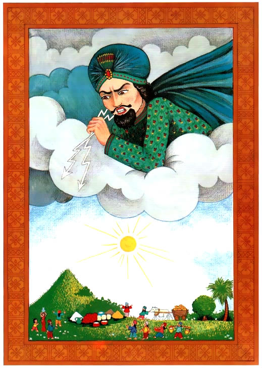

Pero no todos estaban felices. Desde su palacio celestial, Indra el rey de la lluvia, miraba a los aldeanos de Vrindavan con recelo. El se molesto mucho al ver que habian detenido el sacrificio simplemente por que un pequeño niño les dijo que lo hisieran. “Como se atreven a ignorarme!” El dijo. “Les dare una lección que no olvidaran”. Furiosamente, caminaba por su palacio, mientras le salian truenos de sus cabellos, sacudiendo los cielos. Indra exclamo: “¡Les mostrare mi poder y castigare a ese Gopal!”